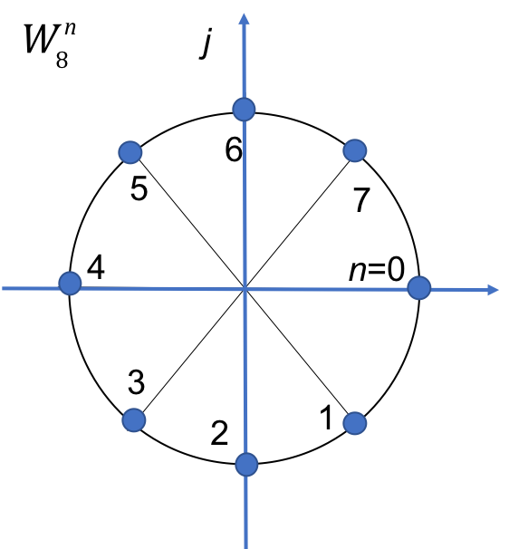

Worksheet 18#
To accompany Chapter 7.1 The Discrete Fourier Transform#
We will step through this worksheet in class.
You are expected to have at least watched the video presentation of Chapter 7.1 of the notes before coming to class.
If you haven’t watch it afterwards!
List of Abbreviations#
CT – Continuous Time
DT – Discrete Time
DF - Discrete frequency
DFT – Discrete (Time) Fourier Transform
FFT – Fast Fourier Transform
Notation#
In the following we shall denote a DT signal as \(x[n]\) and its discrete frequency function as \(X[m]\).
Z-Transform#
Recall that
The value of this function on the unit circle in the Z-plane will be
This is an infinite sum. So to compute it, we need to truncate it.
The Discrete-time Fourier Transform#
Let’s assume that instead of an infinite number of points, we have \(N\) points, equally distributed around the unit circle, then the truncated version will be:
where
and \(m = 0,1,2,\ldots, N-1\) and \(n = 0,1,2,\ldots, N-1\).
We refer to the equation
as the N-point Discrete-time Fourier Transform (DFT) of \(x[n]\).
The inverse DFT is defined as
for \(n = 0,1,2,\ldots, N-1\).
Note the symmetry of the DFT and the Inverse DFT!
In general, the DFT is complex, and thus it can be expressed as
for \(m = 0,1,2,\ldots,N-1\).
Since
the DFT can be expresssed as
For \(n=0\) this reduces to
Then the real part of \(X[m]\) is
and the imaginary part is
Note that the summations are from 1 to \(N-1\) because \(n=0\) is covered in the real term, and as \(x[0]\) is real, it is zero in the corresponding imaginary term.
In Class Example 1#
A discrete time signal is defined by the sequence
\(x[0] = 1\), \(x[1] = 2\), \(x[2] = 2\), \(x[3] = 1\), and \(x[n]=0\) for all other values of \(n\).
Compute the frequency components \(X[m]\).
Solution 1#
Compute the \(N\) point DFT for \(\Re\left\{X[m]\right\}\).
Compute the four point DFT for \(\Im\left\{X[m]\right\}\).
Add these together to find \(X[m]\).
In Class Example 2#
Use the inverse DFT to compute the discrete-time sequence \(x[n]\) from \(X[m]\).
Solution 2#
Write down the expression \(x[n]\) in terms of \(X[m]\).
Compute \(x[0]\) from this result.
Repeat for \(x[1]\), \(x[2]\) and \(x[3]\).
Simulink model of the DFT#
cd matlab
pwd
See dft_ex10_1.slx
dft_ex10_1

Try inputting your student number.
MATLAB model of the DFT#
Karris Example 10.1. To successfully run this script you will need to download the functions dft.m and idft.m and make them available on your MATLABPATH.
xn = [2 0 0 8 9 7 5 0];
open dft
Xm = dft(xn,8)
open idft
xn = idft(Xm,8)
A useful compact notation#
The term
is a rotating vector where the range \(0 <= \theta <= 2\pi\) is divided into \(N\) equal segments where \(N\) is usually taken to be a power of 2.
It is convenient to represent this as \(W_N\), that is
and consequently,
In Class Example 3#
Compute the complex numbers represented by the rotating vector \(W_8\)
Solution 3#
Rewrite \(W_8\) in exponential form
Visualize on unit circle

Complete this table
\(n\) |
\(\theta\) |
Real |
Imaginary |
\(W_8^n\) |
|---|---|---|---|---|
0 |
0 |
1 |
0 |
1 |
Using this notation, the DFT and inverse DFT pairs are represented as:
and
MATLAB implementation of DFT#
Using the W notation, it is very easy to write a function to implement the DFT.
We will demonstrate this in class.
For example, consider dft.m:
function [ Xm ] = dft( xn, N )
% Computes Discrete Fourier Transform
% -----------------------------------
% [Xm] = dft(xn, N)
% Xm = DFT coeff. array over 0 <= m <= N-1
% xn = N-point finite-duration sequence
% N = length of DFT
%
n = [0:1:N-1]; % row vector for n
m = [0:1:N-1]; % row vector for m
WN = exp(-j*2*pi/N); % Wn factor
nm = n'*m; % creates an N by N matrix of nm values
WNnm = WN .^ nm; % DFT matrix
Xm = xn * WNnm; % row vector of DFT coefficients
Similarly for the inverse DFT idft.m:
function [ xn ] = idft( Xm, N )
% Computes Inverse Discrete Fourier Transform
% -------------------------------------------
% [xn] = idft(Xm, N)
% xn = N-point sequence over 0 <= n <= N-1
% Xm = DFT coeff. array over 0 <= m <= N-1
% N = length of DFT
%
n = [0:1:N-1]; % row vector for n
m = [0:1:N-1]; % row vector for m
WN = exp(-j*2*pi/N); % Wn factor
nm = n'*m; % creates an N by N matrix of nm values
WNnm = WN .^ (-nm); % DFT matrix
xn = (Xm * WNnm)/N; % row vector for IDFT values
Notes#
In the remainder of these notes, the correspondence between \(x[n]\) and \(X[m]\) will be written
In Example 2, we found that, although the DT sequence \(x[n]\) was real, the discrete frequency (DF) sequence was complex. However, in most applications we are interested in the magnitude and phase of the DF, that is
and
In Class Example 4#
Use MATLAB to compute the magnitude of the frequency components of the following DT function:
\(n\) |
0 |
1 |
2 |
3 |
4 |
5 |
6 |
7 |
8 |
9 |
10 |
11 |
12 |
13 |
14 |
15 |
|---|---|---|---|---|---|---|---|---|---|---|---|---|---|---|---|---|
\(x[n]\) |
1.0 |
2 |
2 |
2.5 |
1.5 |
0.5 |
-0.5 |
-1.5 |
-2.5 |
-0.5 |
0.25 |
1.25 |
2 |
1.5 |
1 |
0.5 |
We will compute this in class and make some comments afterwards.
xn = [ 1, 2, 3, 2.5, 1.5, 0.5,...
-0.5, -1.5, -2.5, -0.5,...
0.25, 1.25, 2, 1.5, 1, 0.5];
stem([0:15],xn),xlabel('n'),ylabel('x[n]'),title('Discrete Time Sequence')
Xm = dft(xn,16);
stem([0:15],abs(Xm)),xlabel('m'),ylabel('|X[m]|'),title('Discrete Frequency Sequence')
Points to note:
\(X[0] = 12\) is the DC component of the DT sequence.
After the \(|X[8]| = 1.4872\) term, the magnitude of the frequency values for the range \(9 <= m \le 15\) are the mirror image of the values for the range \(0 <= m <= 7\).
This is not a coincidence, in fact if \(x[n]\) is an N-point real discrete-time function, only \(N/2\) of the frequency components of \(|X[m]|\) are unique.
A summary of the important features of sampling and the DFT#
\(N\) is the number of samples in frequency.
\(f_s\) sampling frequency, samples per second.
\(T_t\) period of a periodic DT function.
\(t_s\) interval between the \(N\) samples in time period \(T_t\).
\(f_f\) period of a periodic DF function.
\(F_s\) interval between the \(N\) samples in frequency period \(T_f\).
The relationships between these quantities are:
We will add these quantities to the results of Example 4 in class.
Example 4 (continued)#

To reproduce this plot use repeat.m.
In Class Example 5#
The period of a periodic DT function is 0.125 ms and it is sampled at 1024 equally spaced points. It is assumed that with this number of samples, the sampling theorem is satisfied and thus there will be no aliasing.
Compute the interval \(t_t\) between samples for the periodic signal
Compute the period \(T_f\) of the frequency spectrum in kHz
Compute the interval \(t_f\) between frequency components in kHz
Compute the sampling frequency \(f_s\).
Compute the Nyquist frequency \(f_n\).
Solution#
To be done in class.
Compute the interval \(t_t\) between samples for the periodic signal
Compute the period of the frequency spectrum \(T_f\) in kHz
Compute the interval \(t_f\) between frequency components in kHz
Compute the sampling frequency \(f_s\).
Compute the Nyquist frequency \(f_n\).